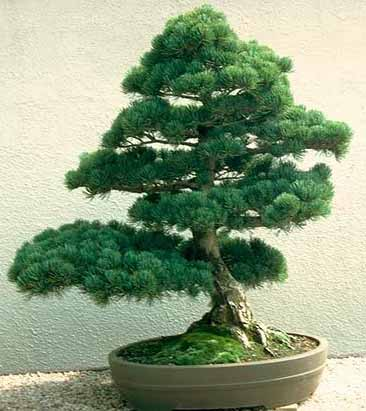
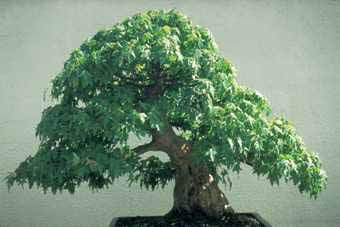
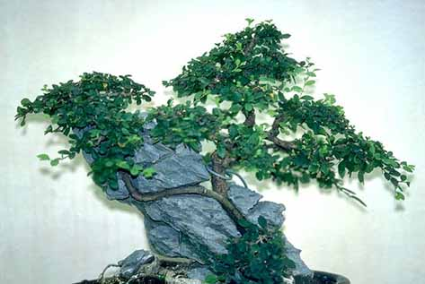

Bonsai
|  |
Bonsai:(lit. "grown on a tray"), the Japanese art of growing miniature trees. The bonsai tradition is believed to have originated in China over a thousand years ago and continues to this day, as well as in Vietnam and Thailand, but it was only in Japan that the practice of growing and caring for single plants was brought to the level of art. First appearing in Japan during the Kamakura era (1185-1333) along with Zen Buddhism, bonsai was widely cultivated in various sectors of society by the end of the Edo era. |
|
In bonsai, preference is given to evergreen trees (pine, cedar, cypress), as well as deciduous (cherry, maple, beech). It is impossible to give the exact dimensions of an ideal bonsai, although as a guideline, it can be indicated that beech, which in nature reach 30 m in height and 2 m in diameter, can be reduced 60-80 times. |
 |
Bonsai grows in a special container, usually kept outside the home, although they are often displayed on special occasions in a tokonoma, a special niche in a room that serves to display works of art. With proper care, bonsai can live for several hundred years, passing from one generation to the next. One of the most famous bonsai is the five-needle pine, which belonged to the military ruler of Japan in the 18th century, the third shogun Tokugawa Iemitsu.
|
There are two main styles in bonsai: classical (koten) and poetic (bunzin). In the first style, the tree trunk at the base is thicker than at the top, and in the second, the opposite is true. In bonsai, they seek not only to copy nature, but to express a certain mood and even create a complex image. In any case, the bonsai should look natural and not show the interference of the hands of its creator. |
 |
There are several types of bonsai: "straight", "inclined", "cascading", "semi-cascading", "twisted", "bifurcated", "group", "forest" and "rocky". Each of these types of bonsai is named for the location of the tree: say, the "twisted" type - the tree trunk is twisted, the "forked" type - a single tree trunk is divided at the base, giving the appearance of a pair of trees, etc. A plant in a bonsai should always be several shifted from the center of the container. Traditionally, it is believed that a real bonsai should carry three main qualities - truth, kindness, beauty (Japanese shin-zen-bi).